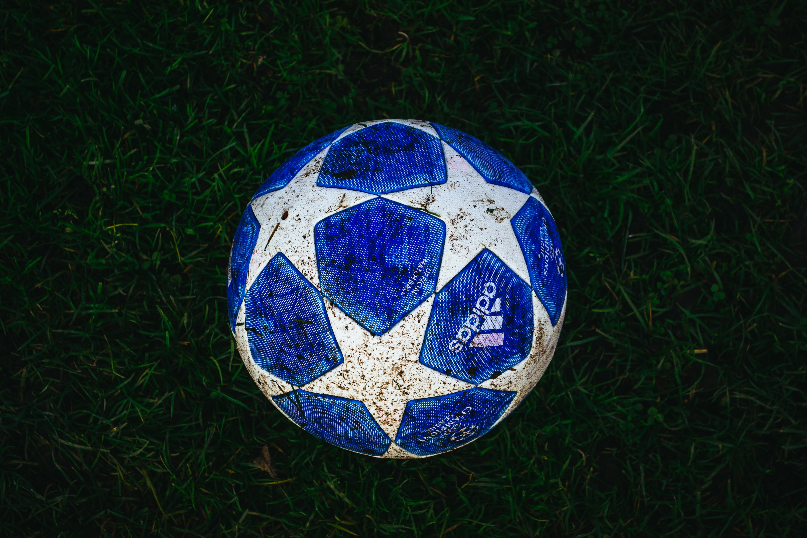

if you are intresting in the football register now to know all news about this awesome sport
this website take us to know about the best sport and take us to the
premier league
the most important tittle the champions league
the legends of this sport
the most popular sport

Football is a family of team sports that involve, to varying degrees, kicking a ball to score a goal. Unqualified, the word football normally means the form of football that is the most popular where the word is used. Sports commonly called football include association football (known as soccer in some countries)
Football fans are passionate, loyal and knowledgeable as ever. What more can we find out about this niche, yet key audience? Digging a little deeper, our latest research shows that the same goes for brands looking to strike a winning goal when creating successful digital campaigns for major football events like the African Cup. This study exploring the most popular football-related content on YouTube revealed that being a soccer fan goes way beyond the match, with fans’ passion for the beautiful game blending into other areas of their lives, including what they create, consume and engage with on YouTube.
Borussia Dortmund: why are they the best-supported, most fun, coolest club in the world?